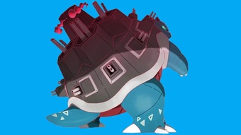

<!--<!doctype html>
<html lang="en">
<head>
  <meta charset="utf-8" />
  <title>Gigantamax Blastoise Raid Guide — Counters, Weakness & Best Movesets | Pokémon GO</title>
  <meta name="viewport" content="width=device-width, initial-scale=1" />
  <meta name="description" content="Gigantamax Blastoise raid guide for Pokémon GO — complete counters, weaknesses, best movesets, team comps, weather & IV advice, DPS/energy notes and step-by-step strategy to beat Gigantamax Blastoise efficiently." />
  <link rel="canonical" href="https://pokemongaming.in/gigantamax-blastoise-raid-guide.html" />
  <style>
    /* Minimal article styles — integrate with your site theme */
    body { font-family: Inter, system-ui, -apple-system, "Segoe UI", Roboto, Arial; color:#111827; background:#fff; line-height:1.65; padding:20px; max-width:980px; margin:0 auto; }
    header h1 { font-size:1.9rem; margin-bottom:6px; }
    .lead { font-size:1.05rem; margin-bottom:1rem; color:#111827; }
    .small { font-size:0.92rem; color:#6b7280; }
    nav.toc { background:#f8fafc; border:1px solid #e6eef6; padding:12px; margin:14px 0; border-radius:8px; }
    nav.toc h2 { margin:0 0 8px 0; font-size:1.05rem; }
    nav.toc ul { margin:0; padding-left:18px; }
    section { margin-top:1.25rem; }
    h2 { font-size:1.25rem; margin-bottom:8px; color:#0f172a; }
    h3 { font-size:1.03rem; margin-bottom:6px; color:#0f172a; }
    table { border-collapse:collapse; width:100%; margin:10px 0 14px; }
    th, td { border:1px solid #e6eef6; padding:10px 12px; text-align:left; vertical-align:top; }
    th { background:#f1f5f9; font-weight:700; color:#0f172a; }
    .note { background:#fff7ed; padding:10px; border-left:4px solid #f59e0b; margin:12px 0; border-radius:4px; }
    .pro-tip { background:#ecfeff; padding:10px; border-left:4px solid #06b6d4; margin:12px 0; border-radius:4px; }
    ol, ul { margin-left:1.1rem; }
    .author-box { border-top:1px solid #e6eef6; padding-top:12px; margin-top:22px; display:flex; gap:12px; align-items:center; }
    .author-box img { width:56px; height:56px; border-radius:50%; object-fit:cover; }
    .cta { display:inline-block; padding:8px 12px; background:#047857; color:white; border-radius:6px; text-decoration:none; }
    .faq q { font-style:italic; }
    pre.code { background:#f8fafc; padding:12px; overflow:auto; border-radius:6px; }
    .muted { color:#6b7280; font-size:0.95rem; }
    @media (max-width:700px) { body { padding:14px; } }
  </style>
</head>
<body>
<article>
  <header>
    <h1>Gigantamax Blastoise Raid Guide — Counters, Weakness & Best Movesets | Pokémon GO</h1>
    <p class="lead">Gigantamax Blastoise turns the classic water tank into a raid-scale hydraulic fortress — larger HP pool, stronger charged attacks, and notably higher durability. This guide covers everything you need to reliably beat Gigantamax Blastoise in Pokémon GO: typing & weaknesses, ranked counters, moveset mapping, DPS/energy logic for long fights, suggested teams for elite and budget players, weather & Mega considerations, IV/CP guidance, and practical step-by-step tactics.</p>
    <p class="small">Last updated: <strong>October 29, 2025</strong> — US English</p>
  </header>

  <nav class="toc" aria-label="Table of contents">
    <h2>Table of Contents</h2>
    <ul>
      <li><a href="#overview">Gigantamax Blastoise — Quick Overview</a></li>
      <li><a href="#weaknesses">Weakness & Type Chart</a></li>
      <li><a href="#best-counters">Best Counters (Ranked)</a></li>
      <li><a href="#moveset-mapping">Moveset Mapping & Recommended Counters</a></li>
      <li><a href="#dps-energy">DPS & Energy Considerations</a></li>
      <li><a href="#players-needed">Players Required & Party Types</a></li>
      <li><a href="#sample-teams">Sample Party Builds</a></li>
      <li><a href="#strategy">Step-by-step Battle Strategy</a></li>
      <li><a href="#iv-cp">IV / CP & Powering Advice</a></li>
      <li><a href="#weather">Weather & Mega Notes</a></li>
      <li><a href="#catch">Raid Rewards & Catch Tips</a></li>
      <li><a href="#related">Related Guides</a></li>
      <li><a href="#faq">FAQ</a></li>
    </ul>
  </nav>

  <section id="overview">
    <h2>Gigantamax Blastoise — Quick Overview</h2>
    <p>Blastoise’s Gigantamax form amplifies its role as a Water-type tank: massive HP pool, strong water STABs (e.g., Hydro Pump / Origin Pulse analogues) and potential secondary coverage like Ice Beam or Flash Cannon in event variants. In raid fights, expect longevity—clear time comes down to efficient sustained damage, energy economy, and smart shield use. While purely Water strong counters dominate, be ready for mixed coverage if the charged-move preview shows secondary types.</p>

    <p class="pro-tip"><strong>Pro tip:</strong> For Gigantamax Blastoise, Hydro-based boss moves reward Ground-lite thinking only in rare variants; primarily stack Electric and Grass counters unless preview shows Ice/Steel moves.</p>
  </section>

  <section id="weaknesses">
    <h2>Weakness & Type Chart</h2>
    <p>Blastoise is a pure Water type (with possible event coverage). Use this quick table to choose your squad.</p>

    <table aria-label="Blastoise weakness chart">
      <thead>
        <tr><th>Type</th><th>Effect vs Blastoise</th></tr>
      </thead>
      <tbody>
        <tr><td>Electric</td><td>Super effective (×1.6) — best general counters vs Water.</td></tr>
        <tr><td>Grass</td><td>Super effective (×1.6) — strong vs Water; many Grass picks are fragiler so manage shields.</td></tr>
        <tr><td>Dragon</td><td>Neutral — use only if moves align.</td></tr>
        <tr><td>Ice</td><td>Neutral — good if boss uses Dragon / Flying coverage.</td></tr>
        <tr><td>Ground</td><td>Resisted — avoid Ground attackers vs Water.</td></tr>
      </tbody>
    </table>

    <p class="note">Note: Electric is the default go-to. If the preview shows a heavy Ice move (e.g., Ice Beam) or Steel move, adjust accordingly — include neutral bulk picks to absorb damage.</p>
  </section>

  <section id="best-counters">
    <h2>Best Counters — Ranked</h2>
    <p>Ranked by practical raid performance, availability, and synergy in long HP pool encounters.</p>

    <table aria-label="Best counters list">
      <thead>
        <tr><th>Rank</th><th>Pokémon</th><th>Moveset</th><th>Role</th></tr>
      </thead>
      <tbody>
        <tr><td>1</td><td>Zekrom</td><td>Charge Beam / Bolt Strike</td><td>Top Electric DPS vs Water with excellent energy gain.</td></tr>
        <tr><td>2</td><td>Tapu Koko</td><td>Volt Switch / Wild Charge</td><td>Fast Electric spammer — great for multi-shield windows.</td></tr>
        <tr><td>3</td><td>Raikou</td><td>Volt Switch / Wild Charge</td><td>Accessible Electric with good sustained output.</td></tr>
        <tr><td>4</td><td>Electivire</td><td>Thunder Punch / Wild Charge</td><td>Solid accessible Electric for F2P/budget players.</td></tr>
        <tr><td>5</td><td>Victreebel / Roserade</td><td>Razor Leaf / Leaf Storm (or Frenzy Plant)</td><td>High-damage Grass options if you have charged TMs or events.</td></tr>
        <tr><td>6</td><td>Ferrothorn (situational)</td><td>Power Whip / Grass Knot</td><td>Bulky Grass option for mixed movesets.</td></tr>
        <tr><td>7</td><td>Kyogre</td><td>Waterfall / Origin Pulse</td><td>Neutral if event variant flips — only use if coverage demands.</td></tr>
        <tr><td>8</td><td>Magneton / Magnezone</td><td>Spark / Wild Charge or Thunderbolt</td><td>Electric options with tankiness depending on moves.</td></tr>
        <tr><td>9</td><td>Luxray / Ampharos</td><td>Fast electric moves</td><td>Budget electric fillers.</td></tr>
        <tr><td>10</td><td>Dragonite</td><td>Dragon Breath / Outrage</td><td>Neutral filler if the boss uses Dragon coverage.</td></tr>
      </tbody>
    </table>

    <p class="small">If you lack legendaries, focus on powered Tapu Koko / Raikou / Magnezone and a strong Grass TM investment (Frenzy Plant/Mud) where appropriate.</p>
  </section>

  <section id="moveset-mapping">
    <h2>Moveset Mapping & Recommended Counters</h2>
    <p>Always preview the charged move to pick your best counters. Here are common charged-move pairings and how to react.</p>

    <table aria-label="moveset mapping">
      <thead>
        <tr><th>Possible Charged Moves</th><th>Primary Counter Type</th><th>Recommended Pokémon</th></tr>
      </thead>
      <tbody>
        <tr><td>Hydro Pump / Surf</td><td>Electric</td><td>Zekrom, Tapu Koko, Raikou</td></tr>
        <tr><td>Ice Beam / Blizzard (event)</td><td>Electric + Neutral Tanks</td><td>Tapu Koko + Magnezone</td></tr>
        <tr><td>Flash Cannon (rare)</td><td>Fire / Ground (avoid) — stick with Electric as neutral</td><td>Reshiram (if forced), Electric backups</td></tr>
        <tr><td>Dragon Pulse (rare)</td><td>Dragon / Ice</td><td>Dialga, Kyurem, Mamoswine</td></tr>
      </tbody>
    </table>

    <p class="note">Default: if charged move is Water-type (Hydro Pump/Surf), prioritize Electric. If secondary coverage appears, slot one neutral tank to soak and preserve your top Electric DPS.</p>
  </section>

  <section id="dps-energy">
    <h2>DPS & Energy Considerations</h2>
    <p>Gigantamax raids reward energy efficiency and consistent DPS over glass-cannon burst. Consider these competitive rules:</p>
    <ul>
      <li><strong>EPS matters:</strong> Electric attackers with high EPS (Charge Beam users) generate more charged moves over long fights.</li>
      <li><strong>Charge timing:</strong> Bait shields with medium charges and empty windows with high-value charges (Bolt Strike, Wild Charge).</li>
      <li><strong>Swap economy:</strong> Minimize swaps; each swap costs DPS time and can waste revives in long fights.</li>
      <li><strong>Survivability:</strong> A slightly lower DPS but bulkier Electric (Magnezone) can outperform fragile glass-cannons if the boss has heavy secondary coverage.</li>
    </ul>

    <p class="pro-tip">A Zekrom + Tapu Koko core often outperforms multiple middling electric picks due to Bolt Strike’s raw damage and Charge Beam’s EPS synergy.</p>
  </section>

  <section id="players-needed">
    <h2>How Many Players Are Needed?</h2>
    <table aria-label="players-needed">
      <thead>
        <tr><th>Team Quality</th><th>Players Required (Approx.)</th><th>Notes</th></tr>
      </thead>
      <tbody>
        <tr><td>Top meta (Zekrom / Tapu Koko)</td><td>2–3</td><td>With ideal moves & weather, duos/trios can clear.</td></tr>
        <tr><td>Strong local groups</td><td>3–5</td><td>Typical for active raiders.</td></tr>
        <tr><td>Mixed / casual</td><td>6–9</td><td>Bring correct Electric/Grass counters; avoid stacking resistances.</td></tr>
      </tbody>
    </table>

    <p class="note">Weather and Mega support can reduce required players—coordinate with your raid group when possible.</p>
  </section>

  <section id="sample-teams">
    <h2>Sample Party Builds</h2>

    <h3>Elite (2–3 players)</h3>
    <ol>
      <li>Zekrom (Charge Beam / Bolt Strike)</li>
      <li>Tapu Koko (Volt Switch / Wild Charge)</li>
      <li>Magnezone / Raikou backup</li>
    </ol>

    <h3>Balanced (3–5 players)</h3>
    <ol>
      <li>Tapu Koko</li>
      <li>Raikou</li>
      <li>Magnezone</li>
      <li>Victreebel / Roserade (if Grass slot needed)</li>
      <li>Gyarados (if neutral filler required)</li>
    </ol>

    <h3>Budget / F2P (6–9 players)</h3>
    <ol>
      <li>Multiple Raikou / Electivire</li>
      <li>Magnezone</li>
      <li>Victreebel or Vileplume with Frenzy Plant</li>
      <li>High-CP Gyarados as filler</li>
      <li>One Dialga or Kyurem if Dragon coverage shows up</li>
    </ol>

    <p class="small">Tip: A single high-level Zekrom + Tapu Koko often reduces the player count more than several mediocre electric attackers.</p>
  </section>

  <section id="strategy">
    <h2>Step-by-step Battle Strategy</h2>
    <ol>
      <li><strong>Check the preview:</strong> If Hydro Pump / Surf appears, commit Electric leads. If Ice Beam or Dragon Pulse appears, slot one neutral tank and add an Ice or Dragon counter respectively.</li>
      <li><strong>Lead with Electric DPS:</strong> Early pressure forces shields and creates energy windows.</li>
      <li><strong>Shield management:</strong> In small groups save at least one shield for a late heavy move; in larger lobbies be flexible.</li>
      <li><strong>Swap to soak:</strong> If a heavy secondary nuke is incoming (Ice Beam/Flash Cannon), rotate in Magnezone or a bulky neutralist to absorb it then swap back.</li>
      <li><strong>Charge timing:</strong> Bait shields, then unload Bolt Strike/Wild Charge into unshielded windows.</li>
      <li><strong>Revive policy:</strong> Stagger revives and returns so you don't create a faint-wave that costs momentum.</li>
    </ol>

    <p class="pro-tip">Coordinate one player to preserve a shield for your primary Bolt Strike user — preserving that single high-value charge often swings the clear time.</p>
  </section>

  <section id="iv-cp">
    <h2>IV / CP & Powering Advice</h2>
    <p>Prioritize moveset and level for raid counters. Recommended CP targets (L40):</p>

    <table aria-label="iv cp table">
      <thead>
        <tr><th>Pokémon</th><th>Target CP (L40)</th><th>Why</th></tr>
      </thead>
      <tbody>
        <tr><td>Zekrom</td><td>~3200–3500+</td><td>Bolt Strike raw damage scales with level.</td></tr>
        <tr><td>Tapu Koko</td><td>~2800–3200</td><td>Fast Electric spamming; level helps survivability and damage.</td></tr>
        <tr><td>Raikou</td><td>~2800+</td><td>Accessible Electric with solid performance.</td></tr>
        <tr><td>Magnezone</td><td>~3000+</td><td>Bulkier electric with good damage.</td></tr>
      </tbody>
    </table>

    <p class="note">Candy XL: only invest XL into counters you’ll repeatedly use (Zekrom, Tapu Koko). TM priority: Bolt Strike / Wild Charge / Frenzy Plant where relevant.</p>
  </section>

  <section id="weather">
    <h2>Weather & Mega Notes</h2>
    <ul>
      <li><strong>Windy:</strong> Neutral for Electric — not hugely relevant.</li>
      <li><strong>Rain:</strong> Boosts Water — avoid unless you plan to use neutral/secondary counters.</li>
      <li><strong>Sunny/Clear:</strong> Neutral — not helpful here.</li>
      <li><strong>Megas:</strong> Mega Manectric (if available) or Mega Ampharos can boost Electric throughput for larger groups — coordinate Megas in the raid lobby.</li>
    </ul>

    <p class="small">Expert note: don’t wait on weather for Blastoise — join if you have at least one strong Electric and a balanced backup; weather rarely changes core counter selection.</p>
  </section>

  <section id="catch">
    <h2>Raid Rewards & Catch Tips</h2>
    <p>Gigantamax raids grant rare candy, TMs, Stardust and a high-CP catch. Use Golden Razz and curveballs for the best capture odds. Save Premier Balls early; use Great/Curve/Golden when the boss is at low HP. If you’re IV hunting, save multiple Premier Balls for repeated throws.</p>

    <table aria-label="catch cp table">
      <thead>
        <tr><th>Trainer Level</th><th>Estimated Catch CP (Unboosted)</th></tr>
      </thead>
      <tbody>
        <tr><td>20</td><td>~1500–1800</td></tr>
        <tr><td>30</td><td>~2100–2600</td></tr>
        <tr><td>40+</td><td>~2600–3300</td></tr>
      </tbody>
    </table>

    <p class="small">Post-raid: Blastoise has collector value; evolve or power only if IVs and your meta justify it. Keep top IV catches for shelf/collection or niche PvP uses.</p>
  </section>

  <section id="related">
    <h2>Related Guides</h2>
    <ul>
      <li><a href="/gigantamax-hatterene-raid-guide.html">Gigantamax Hatterene Raid Guide</a></li>
      <li><a href="/gigantamax-melmetal-raid-guide.html">Gigantamax Melmetal Raid Guide</a></li>
      <li><a href="/gigantamax-sandaconda-raid-guide.html">Gigantamax Sandaconda Raid Guide</a></li>
      <li><a href="/gigantamax-appletun-raid-guide.html">Gigantamax Appletun Raid Guide</a></li>
    </ul>
  </section>

  <section id="faq">
    <h2>Frequently Asked Questions (FAQ)</h2>
    <div class="faq">
      <h3>Q: <q>What's the single best counter to Gigantamax Blastoise?</q></h3>
      <p>A: Zekrom (Charge Beam / Bolt Strike) is the top overall counter due to raw Electric DPS and energy synergy. Tapu Koko and Raikou are excellent and more accessible alternatives.</p>

      <h3>Q: <q>Can I solo Gigantamax Blastoise?</q></h3>
      <p>A: Soloing a Gigantamax boss is extremely difficult. Only the most optimized players with multiple maxed legendaries and ideal weather might attempt it. Realistic clears are teams of 2–5 depending on roster quality.</p>

      <h3>Q: <q>Which TMs should I prioritize?</q></h3>
      <p>A: Priority TMs are Bolt Strike / Wild Charge for Electric attackers and Frenzy Plant for any Grass pivots you plan to use. Bolt Strike and Hydro Cannon (where relevant) are high-value investments.</p>

      <h3>Q: <q>Which weather is most helpful?</q></h3>
      <p>A: Weather is not a huge factor for Blastoise — Electric counters perform well in most conditions. Rain boosts the boss but also buffs Water variants; prefer not to wait on weather unless you coordinate boosts for legendaries.</p>
    </div>
  </section>

  <footer class="muted">
    <div class="author-box">
      <div>
        <strong>Written by Abhishek</strong>
        <p class="small">Pokémon GO Trainer & Guide Writer. I test raid compositions in real raids and keep guides updated to reflect community strategies and current game mechanics.</p>
        <p class="small"><a class="cta" href="/guides.html">See all guides</a></p>
      </div>
    </div>

    <p class="small" style="margin-top:12px;">Disclaimer: Pokémon, Pokémon GO and related trademarks are the property of Nintendo / The Pokémon Company. This fan-made guide is not affiliated with the trademark owners.</p>
  </footer>

  <!-- FAQ schema (JSON-LD) -->
  <script type="application/ld+json">
  {
    "@context": "https://schema.org",
    "@type": "FAQPage",
    "mainEntity": [
      {
        "@type": "Question",
        "name": "What's the single best counter to Gigantamax Blastoise?",
        "acceptedAnswer": {
          "@type": "Answer",
          "text": "Zekrom (Charge Beam / Bolt Strike) is the top overall counter due to raw Electric DPS and energy synergy. Tapu Koko and Raikou are excellent and more accessible alternatives."
        }
      },
      {
        "@type": "Question",
        "name": "Can I solo Gigantamax Blastoise?",
        "acceptedAnswer": {
          "@type": "Answer",
          "text": "Soloing a Gigantamax boss is extremely difficult. Only the most optimized players with multiple maxed legendaries and ideal weather might attempt it."
        }
      },
      {
        "@type": "Question",
        "name": "Which TMs should I prioritize?",
        "acceptedAnswer": {
          "@type": "Answer",
          "text": "Priority TMs are Bolt Strike / Wild Charge for Electric attackers and Frenzy Plant for Grass pivots. Bolt Strike is a high-value TM for raid-focused Electric counters."
        }
      }
    ]
  }
  </script>
</article>
</body>
</html>


<!DOCTYPE html>
<html lang="en">
<head>
<meta charset="UTF-8">
<meta name="viewport" content="width=device-width, initial-scale=1.0">
<title>Gigantamax Blastoise Raid Guide — Counters, Weaknesses & Strategy | Pokémon GO</title>
<meta name="description" content="Complete Gigantamax Blastoise raid guide for Pokémon GO. Learn about its weaknesses, counters, movesets, and strategies to defeat this armored water cannon Pokémon.">
<link rel="stylesheet" href="style.css">
<style>
:root {
  --bg:#f0f9ff;
  --card:#ffffff;
  --ink:#022c43;
  --muted:#557c91;
  --brand:#2563eb;
  --aqua:#3b82f6;
  --shadow:#0f172a;
}
body {
  font-family:'Segoe UI',sans-serif;
  background:var(--bg);
  color:var(--ink);
  margin:0;
  line-height:1.6;
}
.container {
  width:90%;
  max-width:1200px;
  margin:auto;
  padding:1.5rem 0;
}
header {
  text-align:center;
  padding:2rem 0 1rem;
}
header h1 {
  color:var(--brand);
  font-size:2rem;
  margin-bottom:0.5rem;
}
img {
  max-width:100%;
  border-radius:1rem;
  margin:1rem 0;
}
table {
  width:100%;
  border-collapse:collapse;
  margin:1rem 0;
}
th,td {
  border:1px solid #ccc;
  padding:8px;
  text-align:left;
}
th {
  background:var(--brand);
  color:#fff;
}
.section {
  background:var(--card);
  border-radius:1rem;
  padding:1.5rem;
  margin-bottom:1.5rem;
  box-shadow:0 0 10px rgba(0,0,0,0.05);
}
a {color:var(--brand);text-decoration:none;}
a:hover{text-decoration:underline;}
.author-box {
  background:var(--card);
  padding:1rem;
  border-top:3px solid var(--brand);
  border-radius:1rem;
  text-align:center;
}
.faq dt{font-weight:bold;margin-top:1rem;}
.faq dd{margin:0 0 1rem 0;}
footer{
  text-align:center;
  font-size:0.9rem;
  padding:1.5rem;
  color:var(--muted);
}
</style>
</head>
<body>
<header>
  <h1>Gigantamax Blastoise Raid Guide</h1>
  <p>Conquer the ultimate armored turtle with our full Pokémon GO raid breakdown and strategy tips.</p>
  
</header>

<div class="container">

<section class="section">
<h2>Table of Contents</h2>
<ol>
<li><a href="#overview">Raid Overview</a></li>
<li><a href="#weaknesses">Weaknesses & Resistances</a></li>
<li><a href="#counters">Best Counters</a></li>
<li><a href="#movesets">Moveset Analysis</a></li>
<li><a href="#strategy">Battle Strategy</a></li>
<li><a href="#rewards">Rewards & Shiny Availability</a></li>
<li><a href="#faq">FAQ</a></li>
</ol>
</section>

<section id="overview" class="section">
<h2>Gigantamax Blastoise Overview</h2>
<p>Gigantamax Blastoise is a powerhouse Water-type raid boss in Pokémon GO. Its signature G-Max Move, <strong>G-Max Cannonade</strong>, rains continuous damage on all opponents for several turns — a serious threat to unprepared teams.</p>

<p>Raid Tier: <strong>5★ Gigantamax</strong><br>
Recommended Trainers: <strong>3–6 high-level players</strong><br>
Boosted Weather: <strong>Rainy</strong></p>
</section>

<section id="weaknesses" class="section">
<h2>Weaknesses & Resistances</h2>
<table>
<tr><th>Type</th><th>Effectiveness</th></tr>
<tr><td>Electric</td><td>Weak ×1.6</td></tr>
<tr><td>Grass</td><td>Weak ×1.6</td></tr>
<tr><td>Fire</td><td>Resistant ×0.625</td></tr>
<tr><td>Water</td><td>Resistant ×0.625</td></tr>
<tr><td>Ice / Steel</td><td>Resistant ×0.625</td></tr>
</table>
</section>

<section id="counters" class="section">
<h2>Best Counters for Gigantamax Blastoise</h2>
<table>
<tr><th>Pokémon</th><th>Recommended Moves</th><th>Notes</th></tr>
<tr><td><strong>Zekrom</strong></td><td>Charge Beam + Wild Charge</td><td>Top-tier Electric attacker with bulk.</td></tr>
<tr><td><strong>Raikou</strong></td><td>Thunder Shock + Wild Charge</td><td>Reliable Electric counter for consistent DPS.</td></tr>
<tr><td><strong>Electivire</strong></td><td>Thunder Shock + Wild Charge</td><td>Fast energy generation for multiple charge moves.</td></tr>
<tr><td><strong>Roserade</strong></td><td>Razor Leaf + Grass Knot</td><td>Top Grass counter against Water types.</td></tr>
<tr><td><strong>Tapu Koko</strong></td><td>Spark + Thunderbolt</td><td>Solid pick with Electric-type boost in rainy weather.</td></tr>
</table>
</section>

<section id="movesets" class="section">
<h2>Gigantamax Blastoise Moveset Analysis</h2>
<p>Blastoise’s move pool provides balanced coverage, making it a challenging raid boss for Electric or Grass attackers if not well-prepared.</p>
<table>
<tr><th>Fast Moves</th><th>Charge Moves</th></tr>
<tr><td>Water Gun (Water)</td><td>Hydro Cannon (Water)</td></tr>
<tr><td>Bite (Dark)</td><td>Ice Beam (Ice)</td></tr>
<tr><td>—</td><td>Flash Cannon (Steel)</td></tr>
</table>
<p><strong>Tip:</strong> Avoid bringing Pokémon weak to Ice or Steel; Electric types remain your safest choice overall.</p>
</section>

<section id="strategy" class="section">
<h2>Raid Strategy & Battle Tips</h2>
<p>Coordinate with friends to ensure maximum damage output and quick re-entry after fainting. Time your charged moves carefully to avoid Blastoise’s Hydro Cannon bursts.</p>
<ul>
<li>Use Electric or Grass Pokémon with solid defense stats.</li>
<li>Dodge Hydro Cannon if you’re using fragile attackers like Electivire.</li>
<li>Rainy weather boosts both Blastoise’s and Electric-type damage.</li>
<li>Megas like <strong>Mega Manectric</strong> or <strong>Mega Venusaur</strong> can give valuable team boosts.</li>
</ul>
</section>

<section id="rewards" class="section">
<h2>Raid Rewards & Shiny Availability</h2>
<p>Defeating Gigantamax Blastoise rewards you with bonus XP, Golden Razz Berries, and a capture encounter. Perfect IV Blastoise CP ranges from <strong>1409–1472</strong> (non-boosted) and <strong>1761–1840</strong> (boosted).</p>
<p><strong>Shiny G-Max Blastoise</strong> features a slightly darker blue tone with striking metallic cannons — a great trophy for collectors.</p>
</section>

<section id="faq" class="section faq">
<h2>FAQ – Gigantamax Blastoise Raid</h2>
<dl>
<dt>Can Gigantamax Blastoise be shiny in Pokémon GO?</dt>
<dd>Yes! Shiny Gigantamax Blastoise has been available during special events and raid rotations.</dd>

<dt>What’s the best weather for this raid?</dt>
<dd>Rainy weather — it boosts Water moves but also enhances Electric-type counters like Zekrom or Raikou.</dd>

<dt>Is G-Max Cannonade stronger than Hydro Cannon?</dt>
<dd>G-Max Cannonade functions similarly to Hydro Cannon with added residual damage, making it more dangerous over time.</dd>

<dt>When will Gigantamax Blastoise return?</dt>
<dd>Usually during Water-type events or anniversary celebrations — keep an eye on official Pokémon GO news.</dd>
</dl>
</section>

<section class="section">
<h2>Related Raid Guides</h2>
<ul>
<li><a href="gigantamax-venusaur-raid-guide.html">Gigantamax Venusaur Raid Guide</a></li>
<li><a href="gigantamax-kingler-raid-guide.html">Gigantamax Kingler Raid Guide</a></li>
<li><a href="gigantamax-lapras-raid-guide.html">Gigantamax Lapras Raid Guide</a></li>
<li><a href="gigantamax-rillaboom-raid-guide.html">Gigantamax Rillaboom Raid Guide</a></li>
<li><a href="gigantamax-gengar-raid-guide.html">Gigantamax Gengar Raid Guide</a></li>
</ul>
</section>

<div class="author-box">
  <p><strong>Author:</strong> Abhishek Dhama</p>
  <p>Pokémon GO strategist & content creator at <a href="https://pokemongaming.in">PokémonGaming.in</a>. Helping trainers conquer every Gigantamax raid with expert battle tips!</p>
</div>

</div>

<footer>
<p>© 2025 PokémonGaming.in | <a href="privacy-policy.html">Privacy Policy</a> | <a href="contact-us.html">Contact Us</a></p>
</footer>
</body>
</html>


-->
<!DOCTYPE html>
<html lang="en">
<head>
  <meta charset="utf-8" />
  <title>Gigantamax Blastoise Raid Guide — Counters, Moves & Strategy | Pokémon GO</title>
  <meta name="viewport" content="width=device-width,initial-scale=1" />
  <meta name="description" content="Complete Gigantamax Blastoise raid guide for Pokémon GO — weaknesses, best Gigantamax & Dynamax counters, movesets, weather tips, recommended lobby sizes, rewards and battle strategy." />
  <meta name="robots" content="index, follow" />
  <link rel="stylesheet" href="posts.css"/>

<meta property="og:title" content="Gigantamax Blastoise Raid Guide — Counters, Moves & Strategy">
  <meta property="og:description" content="Defeat Gigantamax Blastosie in Pokémon GO raids: learn its weaknesses, best Gigantamax and Dynamax counters, moveset warnings, weather interactions, and catch tips.">
  <meta property="og:type" content="article">
  <meta property="og:url" content="https://pokemongaming.in/raids/gigantamax_blastoise.html">
  <meta property="og:image" content="https://pokemongaming.in/raids/images/gigantamax_blastoise_cover.webp">

</head>
<body>
 
    <section class="hero" aria-labelledby="hero-h">

<header>
  <h1>Gigantamax Blastoise — Raid Guide</h1>
</header>


      
    </section>

    <div class="grid" style="margin-top:14px">
      <article class="card" id="guide">
        <h2>Quick summary</h2>
        <div class="kvs" aria-hidden="false">
<div><strong>Species:</strong> Blastoise (Gigantamax)</div>
          <div><strong>Type:</strong> Water </div>
          <div><strong>Primary weaknesses:</strong> Electric, Grass</div>
          <div><strong>Recommended lobby:</strong> 15-20 trainers</div>
                 </div>

<hr style="border: 0; height: 2px; background-color: red; margin: 20px 0;">

         <h2 id="what-is">Introduction</h2>
        <p class="note">

          Gigantamax Blastoise is a Water-type raid boss. Its exclusive G-Max Cannonade continuously damages opponents, making it a challenging raid. Electric and Grass Pokémon are the top counters. This guide explains everything trainers need to beat Gigantamax Blastoise reliably in Pokémon GO raids — from weaknesses and recommended Gigantamax counters to Dynamax picks, weather interactions, team-size guidance, and catch/reward tips.

     </p>

<hr style="border: 0; height: 2px; background-color: red; margin: 20px 0;">

        <h2 id="weaknesses">Weaknesses & resistances</h2>
        <div class="tbl" aria-label="Weaknesses table">
          <table>
            <thead><tr><th>Category</th><th>Details</th></tr></thead>
            <tbody>
              <tr>
                <td><strong>Weak to</strong></td>
                <td>
                   Electric •
                   Grass
                </td>
              </tr>
              <tr>
                <td><strong>Resists</strong></td>
                <td>
                   Fire •
                   Water •
                   Ice •
                   Steel
</td>
              </tr>
              <tr>
                <td><strong>Notes</strong></td>
                <td>Gigantamax bosses often use Max Moves — these can be powerful, sometimes buffing or changing battlefield conditions. Expect higher HP and potentially team-wide effects.</td>
              </tr>
            </tbody>
          </table>
<hr style="border: 0; height: 2px; background-color: red; margin: 20px 0;">
        </div>

    <h2>Best Gigantamax Blastoise Counters</h2>
  <h3>Gigantamax-type Counters</h3>
  <ul>
    <li><strong>Venusaur</strong> </li>
    <li><strong>Rillaboom</strong> </li>
  </ul>

  <h3>Dynamax-type Counters</h3>
  <ul>
    <li><strong>Zapdos</strong> </li>
    <li><strong>Rillaboom</strong></li>
    <li><strong>Toxtricity</strong> </li>
    <li><strong>Falinks</strong> </li>
    <li><strong>Moltres</strong> </li>
    <li><strong>Machamp</strong> </li>
  </ul>

<hr style="border: 0; height: 2px; background-color: red; margin: 20px 0;">

<h2>Best Gigantamax Counters</h2>
      <p>Gigantamax Pokémon that amplify the right types give you a powerful edge. Below are top Gigantamax counters with short notes on why they excel vs G-Max Blastoise.</p>


         <div class="tbl" aria-label="Gigantamax Counters table">
          <table>
            <thead>
              <tr>
                <th>Pokémon</th>
                <th>Fast Moves</th>
                <th>Gigantamax Moves</th>
                <th>Charged Moves</th>
                <th>Elite Moves</th>
                <th>Best Moves</th>
              </tr>
            </thead>
            <tbody>


             <tr>
              <td>
               <!--<div class="poke-cell">
                <strong>--> Gigantamax Charizard <!--</strong></div>-->

                </td>
                <td>Air Slash, Fire Spin</td>
                 <td>G-Max Wildfire</td>
          <td>Overheat, Fire Blast, Dragon Claw</td>
          <td>Dragon Breath, Ember, Wing Attack, Flamethrower, Blast Burn</td>
          <td>Fire Spin(13) and G-Max Wildfire(350)</td>
              </tr>


               <tr>
              <td>
               <!--<div class="poke-cell">
                  <strong>--> Gigantamax Snorlax <!--</strong></div>-->

                </td>
                <td>Lick, Zen Headbutt</td>
                <td>G-Max Replenish</td>
                <td>Heavy Slam, Earthquake, Hyper Beam, Outrage, Skull Bash, Body Slam, Superpower</td>
<td>Yawn</td>
                <td>Zen Headbutt(11) and G-Max Replenish(350)</td>
              </tr>


              <tr>
                <td>
              <!--<div class="poke-cell">
                <strong>-->Gigantamax Lapras<!--</strong></div>-->
                </td>
                <td>Frost Breath, Water Gun, Psywave</td>
                <td>G-Max Resonance</td>
                <td>Blizzard, Hydro Pump, Surf, Skull Bash, Sparkling Aria</td>
<td>Ice Shard, Ice Beam, Dragon Pulse</td>
<td>Frost Breath(11) and G-Max Resonance(350)</td>

              </tr>


             <tr>
              <td>
                <!--<div class="poke-cell">
                <strong>--> Gigantamax Gengar<!--</strong></div>-->

                </td>
                <td>Sucker Punch, Shadow Claw, Hex</td>
                <td>G-Max Terror</td>
                <td>Shadow Ball, Sludge Bomb, Focus Blast, Drain Punch</td>
                <td>Lick, Dark Pulse, Shadow Punch, Sludge Wave, Psychic</td>
<td>Hex(8) and G-Max Terror(350)</td>
              </tr>


          <tr>
              <td>
               <!--<div class="poke-cell">
                <strong>--> Gigantamax Kingler<!--</strong></div>-->

                </td>
                <td>Metal Claw, Bubble</td>
                <td>G-Max Foam Burst</td>
<td>Vise Grip, X-Scissor, Water Pulse, Crabhammer, Razor Shell</td>
                <td>Mud Shot</td>
                <td>Bubble(10) and G-Max Foam Burst(350)</td>
              </tr>


              <tr>
                <td>
                <!--<div class="poke-cell">
               <strong>-->Gigantamax Venusaur<!--</strong></div>-->
                </td>
                <td>Vine Whip, Razor Leaf</td>
                <td>G-Max Vine Lash</td>
                <td>Sludge, Petal Blizzard, Sludge Bomb, Solar Beam</td>
<td>Frenzy Plant</td>
<td>Razor Leaf(13) and G-Max Vine Lash(350)</td>
              </tr>

             <tr>
              <td>
            <!--<div class="poke-cell">
                <strong>--> Gigantamax Toxtricity<!--</strong></div>-->

                </td>
                <td>Spark, Poison Jab, Acid</td>
                <td>G-Max Stun Shock</td>
<td>Acid Spray, Wild Charge, Discharge, Power-Up Punch</td>
                <td> - </td>
                <td>Poison Jab(13) and G-Max Stun Shock(350)</td>
              </tr>


            </tbody>
          </table>
<hr style="border: 0; height: 2px; background-color: red; margin: 20px 0;">
        </div>

<h2>Dynamax & Support Picks</h2>
      <p>Not every raid group will have multiple Gigantamax picks. Dynamax Pokémon make excellent support, either by adding burst damage or soaking time during G-Max residual windows.</p>


       <div class="tbl" aria-label="Dynamax Counters table">
          <table>
            <thead>
              <tr>
                <th>Pokémon</th>
                <th>Dynamax Moves</th>
                <th>Fast Moves</th>
                <th>Charged Moves</th>
                <th>Elite Moves</th>
              </tr>
            </thead>
            <tbody>

              <!-- Electric counters -->

              <tr>
              <td>
             <!--<div class="poke-cell">
                <strong>--> Dynamax Metagross<!--</strong></div>-->

                </td>
                <td>Max Mindstorm, Max Flutterby, Max Steelspike</td>
          <td> Zen Headbutt, Bullet Punch, Fury Cutter</td>
          <td> Flash Cannon, Psychic, Earthquake</td>
          <td> Meteor Mash</td>
              </tr>


               <tr>
<td>
                <!--<div class="poke-cell"><strong>-->Dynamax Machamp<!--</strong></div>-->
                </td>
                <td>Max Knuckle, Max Steelspike</td>
                <td>Bullet Punch, Counter</td>
                <td>Heavy Slam, Dynamic Punch, Close Combat, Rock Slide, Cross Chop</td>
<td>Karate Chop, Stone Edge, Submission, Payback</td>
              </tr>


            <tr>
              <td>
               <!--<div class="poke-cell">
                <strong>--> Dynamax Moltres<!--</strong></div>-->

                </td>
                <td>Max Flare, Max Airstream</td>
          <td>Fire Spin, Wing Attack</td>
          <td>Fire Blast, Overheat, Heat Wave, Ancient Power</td>
                <td>Sky Attack</td>
              </tr>


               <tr>
              <td>
                <!--<div class="poke-cell"><strong>-->Dynamax Falinks<!--</strong></div>-->
                </td>
                <td>Max Knuckle</td>
                <td>Rock Smash, Counter</td>
                <td>Superpower, Brick Break, Megahorn</td>
<td>-</td>
              </tr>


           <tr>
              <td>
              <!--<div class="poke-cell">
                <strong>--> Dynamax Gengar<!--</strong></div>-->

                </td>
                <td>Max Darkness, Max Phantasm</td>
                <td>Sucker Punch, Hex, Shadow Claw</td>
          <td>Focus Blast, Shadow Ball, Sludge Bomb, Drain Punch, Shadow Punch</td>
                <td>Lick, Psychic, Dark Pulse, Sludge Wave</td>
              </tr>


          <tr>
              <td>
               <!--<div class="poke-cell">
                <strong>--> Dynamax Zapdos<!--</strong></div>-->

                </td>
                <td>Max Lightning</td>
                <td>Charge Beam</td>
          <td>Zap Cannon, Thunder, Thunderbolt, Ancient Power, Drill Peck</td>
                <td>Thunder Shock</td>
              </tr>


             <tr>
             <td>
                <!--<div class="poke-cell"><strong>-->Dynamax Entei<!--</strong></div>--></td>
               <td>Max Flare</td>
          <td> Fire Spin, Fire Fang</td>
          <td> Flamethrower, Fire Blast, Overheat, Iron Head, Flame Charge, Scorching Sands</td>
          <td> -</td>
            </tr>


              <!-- Grass picks -->
              <tr>
               <td>
                <!--<div class="poke-cell"><strong>-->Dynamax Rillaboom<!--</strong></div>--></td>
                <td>Max Overgrowth, Max Strike</td>
          <td> Scratch, Razor Leaf</td>
          <td>Energy Ball, Grass Knot, Earth Power</td>
          <td>-</td>
              </tr>


                <tr>
              <td>
             <!--<div class="poke-cell">
                <strong>--> Dynamax Inteleon<!--</strong></div>-->

                </td>
                <td>Max Geyser, Max Strike</td>
          <td>Pound, Water Gun</td>
          <td>Water Pulse, Surf, Shadow Ball</td>
<td>-</td>
              </tr>


              <tr>
               <td>
                <!--<div class="poke-cell"><strong>-->Dynamax Unfezant<!--</strong></div>--></td>                
               <td>Max Airstream, Max Steelspike</td>
          <td>Air Slash, Steel Wing</td>
          <td>Heat Wave, Hyper Beam, Sky Attack</td>
          <td>-</td>
              </tr>


           <tr>
              <td>
                 <!--<div class="poke-cell">
                <strong>--> Dynamax Excadrill<!--</strong></div>-->

                </td>
                <td>Max Quake, Max Steelspike</td>
          <td>Metal Claw, Mud Slap, Mud Shot</td>
          <td>Rock Slide, Earthquake, Drill Run, Iron head, Scorching Sands</td>
          <td>-</td>
              </tr>


               <tr>
                <td>
                <!--<div class="poke-cell"><strong>-->Dynamax Ivysaur<!--</strong></div>-->
                </td>
                 <td>Max Overgrowth</td>
          <td>Razor Leaf, Vine Whip</td>
          <td>Power Whip, Sludge Bomb, Solar Beam</td>
          <td>-</td>
              </tr>


             <tr>
              <td>
              <!--<div class="poke-cell">
                <strong>--> Dynamax Kingler<!--</strong></div>-->

                </td>
                <td>Max Geyser, Max Quake, Max Steelspike</td>
          <td>Metal Claw, Bubble</td>
  <td>Vise Grip, Water Pulse, X-Scissor, Crabhammer, Razor Shell</td>
            <td>Mud Shot</td>
              </tr>


              <tr>
                <td>
                <!--<div class="poke-cell"> <strong>-->Dynamax Bulbasaur<!--</strong></div>-->
                </td>
               <td>Max Overgrowth, Max Strike</td>
          <td> Tackle, Vine Whip</td>
          <td> Power Whip, Seed Bomb, Sludge Bomb</td>
          <td>-</td>
              </tr>

            
             <tr>
                <td>
                <!--<div class="poke-cell"><strong>-->Dynamax Greedent<!--</strong></div>--></td>
                <td>Max Strike, Max Darkness, Max Overgrowth, Max Quake</td>
          <td>Tackle, Bite, Bullet Seed, Mud Shot</td>
          <td>Body Slam, Crunch, Tailblaze</td>
          <td>-</td>
              </tr>


               <tr>
                <td>
               <!--<div class="poke-cell"><strong>-->Dynamax Toxtricity<!--</strong></div>-->
                </td>
                <td>Max Lightning, Max Ooze</td>
          <td>Acid, Spark, Poison Jab</td>
          <td>Acid Spray, Discharge, Wild Charge, Power-Up Punch</td>
          <td>-</td>
              </tr>


             <tr>
                <td>
                <!--<div class="poke-cell"><strong>-->Dynamax Dubwool<!--</strong></div>-->
                </td>
                 <td>Max Strike, Max Knuckle</td>
          <td>Tackle, Take Down, Double Kick</td>
          <td>Wild Charge, Payback, Body Slam</td>
          <td>-</td>
              </tr>


             <tr>
                <td>
                <!--<div class="poke-cell"><strong>-->Dynamax Cryogonal<!--</strong></div>--></td>                
                 <td>Max Hailstorm</td>
          <td>Ice Shard, Frost Breath</td>
          <td>Aurora Beam, Night Slash, Solar Beam, Water Pulse, Triple Axel</td>
          <td>-</td>
              </tr>


              <tr>
                <td>
                <!--<div class="poke-cell"><strong>-->Dynamax Thwackey<!--</strong></div>-->
                </td>
                 <td>Max Strike, Max Overgrowth</td>
          <td>Scratch, Razor Leaf</td>
          <td>Energy Ball, Grass Knot</td>
          <td>-</td>
              </tr>


             <tr>
                <td>
                <!--<div class="poke-cell"><strong>-->Dynamax Venusaur<!--</strong></div>--></td>
                <td>Max Overgrowth</td>
          <td>Razor Leaf, Vine Whip</td>
          <td>Petal Blizzard, Sludge Bomb, Solar Beam, Sludge</td>
          <td>Frenzy Plant</td>
              </tr>


            <tr>
                <td>
              <!--<div class="poke-cell"><strong>-->Dynamax Blissey<!--</strong></div>-->
                </td>
                 <td>Max Strike, Max Mindstorm</td>
          <td>Pound, Zen Headbutt</td>
          <td>Dazzling Gleam, Hyper Beam, Psychic</td>
          <td>Wild Charge</td>
              </tr>


            </tbody>
          </table>

<hr style="border: 0; height: 2px; background-color: red; margin: 20px 0;">
        </div>

  <!--  <section class="ads card" aria-label="Advertisement">
      <ins class="adsbygoogle"
           style="display:block"
           data-ad-client="ca-pub-XXXXXXXXXXXXXX"
           data-ad-slot="2222222222"
           data-ad-format="in-article"
           data-full-width-responsive="true"></ins>
      <script>(adsbygoogle = window.adsbygoogle || []).push({});</script>
    </section>-->


<section class="grid two">
      <article class="card" id="moves">
        <h2>Moves & Threats</h2>
        <p>Blastoise common fast moves are <strong>Rollout</strong> or <strong>Water Gun</strong> and <strong>Bite</strong>. Charged moves include <strong>Skull Bash</strong> or <strong>Flash Cannon</strong> or <strong>Hydro Pump</strong> and <strong>Ice Beam</strong>. Elite moves include <strong>Hydro Cannon</strong>. G-Max Cannonde not only delivers heavy damage but also leaves a damaging area for a short time — timing your swaps and using at least one bulky support reduces wipe risk.</p>

<hr style="border: 0; height: 2px; background-color: red; margin: 20px 0;">

 </article>
<aside class="card" id="cp">
        <h2>CP & IV (Catch)</h2>
        <ul>
          <li><strong>Perfect (L20):</strong> 1,338-1,409 CP</li>
          <li><strong>Weather Boost (L25):</strong> 1,673-1,761 CP</li>
          <li><span class="pill">Boosted by: <strong>Rainy</strong></span></li>
        </ul>
        <p class="note">Use Pinap on poor IVs; switch to Golden Razz on 96%+ or Shiny.</p>
<hr style="border: 0; height: 2px; background-color: red; margin: 20px 0;">
      </aside>
    </section>

    <section class="card" id="weather">
      <h2>Weather Effects & Battle Flow</h2>

     <p><strong>Rainy weather :</strong> boosts <strong> Blastoise Water</strong> moves. <strong>Sunny weather :</strong> boosts <strong> Grass</strong> attackers.</p>

<p>Watch for Ice Beam, which punishes Grass-type counters heavily. Balance your team with Electric attackers.</p>


          </section>

<hr style="border: 0; height: 2px; background-color: red; margin: 20px 0;">

          <!-- <h2 id="tips">Practical battle tips</h2>-->
      <h2>Battle Tips</h2>
      <ul>
       <li>Front-load your best Electric/Grass DPS to capitalize on early damage windows.</li>
                   <li>Coordinate dodges only on heavy Max Moves — constant dodging reduces overall DPS in long fights.</li>
          <li>Star and favorite teams to reduce relobby time; players in large groups should communicate role.</li>
      </ul>

<hr style="border: 0; height: 2px; background-color: red; margin: 20px 0;">

        <h2 id="team-size">Team Size</h2>
        <p>Recommended: <strong>15–20 trainers</strong> for comfortable clears with mixed player levels. With many Gigantamax / Dynamax counters, 10–14 can work. Under 8 trainers should be attempted only if all participants are high-level and coordinated with ideal counters and Mega/Dynamax/G-Max boosts.</p>

<hr style="border: 0; height: 2px; background-color: red; margin: 20px 0;">

 <h2>Why Raid Gigantamax Blastoise?</h2>
  <p>Reasons include Pokédex entry, strong Water attacker, shiny chance, and XL Candy farming.</p>

<hr style="border: 0; height: 2px; background-color: red; margin: 20px 0;">

<h2>When To Avoid</h2>
<p class="small">Avoid Ground, Fire, and Rock Pokémon — they take heavy damage from Blastoise’s Water moves.</p>

<hr style="border: 0; height: 2px; background-color: red; margin: 20px 0;">

       <h2 id="catch">Raid Strategy & Catch Tips</h2>
        <p>
          Gigantamax Blastoise’s bulk makes raids tough. Focus on Electric types for consistent damage, with Grass support when Ice Beam isn’t in play. Dodge G-Max Cannonade’s chip damage to extend survival.</p>

<hr style="border: 0; height: 2px; background-color: red; margin: 20px 0;">

        <section id="faq" aria-label="FAQ">
          <h2>FAQ</h2>
          <h3>What is Gigantamax Blastoise type and weakness?</h3>
<p>Blastoise is a Water type. It is weak to Electric, Grass.</p>
<h3>What are good counters for G-Max Cannonde?</h3>
<p>Strong electric and grass attackers such as Gigantamax Charizard, Gigantamax Lapras, Gigantamax Snorlax, Gigantamax Gengar, Dynamax Venusaur, Dynamax Cryogonal.</p>      
<h3>Can Gigantamax Blastoise be shiny?</h3>
<p>Yes, but in certain events.</p>
<h3>Is Gigantamax Blastoise catchable after the raid? </h3>
<p>Yes — standard raid catch mechanics apply.</p>
<h3>Does weather change move sets?</h3>
<p>Rainy boosts Blastoise’s Water moves; Sunny boosts Grass counters.</p>
<h3>Does Blastoise keep G-Max Cannonade?</h3>
<p>No — it’s exclusive to Gigantamax raids.</p>

<hr style="border: 0; height: 2px; background-color: red; margin: 20px 0;">
    
        </section>

<h2>Conclusion</h2>
      <p>Gigantamax Blastoise is a mechanically interesting raid boss: its Water type is predictable, but the G-Max residual damage forces teams to plan for survivability, not just pure DPS. Prioritize Electric and Grass Gigantamax picks, add Dynamax support for sustained windows, and include at least one high-TDO tank if your lobby is smaller. With the counters and tactics above, you’ll clear Blastoise efficiently and maximize your rewards.</p>

<!--<h2>Related Guides</h2>
<p>Looking for more counters? Check out our 
  <a href="/legendary-raids/solgaleo.html">Solgaleo Raid Guide</a> 
  or learn about 
  <a href="/weather-boosted-raids.html">Weather-Boosted Raids</a>.
</p>-->

<hr style="border: 0; height: 2px; background-color: red; margin: 20px 0;">

</article>

 <aside class="card" aria-label="Sidebar">
        <h2>Quick picks</h2>
        <ul>
           <li><strong>Best types:</strong> Electric, Grass</li>
          <li><strong>Bring:</strong> Gigantamax Charizard, Gigantamax Lapras, Gigantamax Snorlax, Gigantamax Gengar</li>
          <li><strong>Support:</strong> Dynamax Venusaur, Dynamax Cryogonal, Dynamax Toxtricity, Dynamax Kingler</li>
        </ul>

     <!--   <div class="ads" role="complementary" aria-label="secondary ad">
           Replace with second AdSense unit 
          Secondary ad slot — insert AdSense code here
        </div>

        <h3>Image notes</td>
        <p style="font-size:.92rem;color:var(--muted)">Use optimized webp/png images in <code>images/</code> sized ~256×256 and icons in <code>/images/types/</code> (22×22). Compress for performance.</p>-->

<hr style="border: 0; height: 2px; background-color: red; margin: 20px 0;">
      </aside>
</div>
   
  <!--  <section class="card" style="margin-top:12px">
      <h2>Responsible play</h2>
      <p>Play safely, follow local rules and event guidelines, and confirm event windows on Niantic's official Pokémon GO news page. Event details and availability change — always verify on the current event page. :contentReference[oaicite:20]{index=20}</p>
    </section>-->

  <footer class="site-footer">
    <div class="footer-content">
      <p>© 2025 Gigantamax Blastoise Raid Guide</p>
      <p>
       <a href="../terms&conditions.html">Terms & Conditions</a> |
     <a href="../about-us.html">About</a> | 
<a href="../copyright_page.html">Copyright</a> |
              <a href="../contact-us.html">Contact</a> | 
              <a href="../privacy-policy.html">Privacy Policy</a> |
              <a href="../disclaimer.html">Disclaimer</a>

    </p> 

<p>Pokémon and all related content are © 1995–2025 Nintendo, Game Freak, and The Pokémon Company. All trademarks and content belong to their respective owners and are used here for informational and educational purposes only.
</p>
</div>

  <script>
    document.getElementById('yr') && (document.getElementById('yr').textContent = new Date().getFullYear());
  </script>
</body>
</html>


